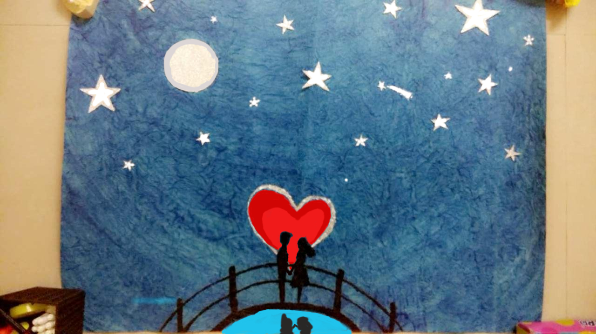

Now that you have a better understanding of how an image is formed, we can start performing basic operations on it. We know that the easiest (and most common) way to load an image in OpenCV is to use the imread function. We also know that this will return an image, which is really an array (either a 2D or 3D one, depending on the parameters you passed to imread()).
The y.array structure is well optimized for array operations, and it allows certain kinds of bulk manipulations that are not available in a plain Python list. These kinds of .array type-specific operations come in handy for image manipulations in OpenCV. Let’s explore image manipulations from the start and step by step though, with a basic example: say you want to manipulate a pixel at the coordinates, (0, 0) to (250,250), of a BGR image and turn it into a white pixel.
# Import Neccessary library
import cv2
import numpy as np
# Read Image MyPic.jpg
img = cv2.imread('MyPic.jpg')
# Convert 0 to 250 pixels from X and Y coordinates to white
img[0:250,0:250] = [255, 255, 255]
# Write Image as MyPicWhitePixel.jpg
cv2.imwrite('MyPicWhitePixel.jpg', img)
The output will look like this:
Let’s say that you want to change the blue value of a particular pixel, for example, the pixel at coordinates, (150, 120). The numpy.array type provides a very handy method, item(), which takes three parameters: the x (or left) position, y (or top), and the index within the array at (x, y) position (remember that in a BGR image, the data at a certain position is a three-element array containing the B, G, and R values in this order) and returns the value at the index position. Another itemset() method sets the value of a particular channel of a particular pixel to a specified value (itemset() takes two arguments: a three-element tuple (x, y, and index) and the new value)
# Import OpenCV library
import cv2
# Import Numpy library
import numpy as np
#Read image named MyPic.jpg
img = cv2.imread('MyPic.jpg')
# Prints the current value of Blue for that pixel
print(img.item(150, 120, 0))
# Set the value of Blue for (150,120) pixel to 255
img.itemset( (150, 120, 0), 255)
# Print value of Blue at (150,120) pixel
print(img.item(150, 120, 0))
The output will be :
145
255
There are a number of interesting things we can do by accessing raw pixels with NumPy’s array indexing; one of them is defining regions of interests (ROI). Once the region is defined, we can perform a number of operations, namely, binding this region to a variable, and then even defining a second region and assigning it the value of the first one (visually copying a portion of the image over to another position in the image):
# Import OpenCV library
import cv2
# Import Numpy library
import numpy as np
# Read Image named MyPic.jpg
img = cv2.imread('MyPic.jpg')
# Define region in my_roi
my_roi = img[0:300, 0:300]
# Replace that region with my_roi
img[300:600, 300:600] = my_roi
# Write Image as ROI.jpg
cv2.imwrite('ROI.jpg', img)
The output will look like this:
Finally, there are a few interesting details we can obtain from numpy.array, such as the image properties using this code:
# Import OpenCV library
import cv2
# Import Numpy library
import numpy as np
# Read Image named MyPic.jpg
img = cv2.imread('MyPic.jpg')
# Shape of Image array
print(img.shape)
# Size of Image array
print(img.size)
# Data type of Image array
print(img.dtype)